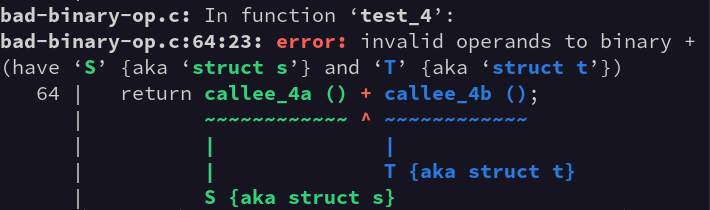

This page is a "brief" summary of some of the huge number of improvements in GCC 15. You may also want to check out our Porting to GCC 15 page and the full GCC documentation.
-mabi=ilp32) has
been deprecated and will be removed in a future release.
reload local
register allocation code. It will be removed for GCC 16, causing
targets that do not support the new LRA local register
allocation code to be removed. See the list of supported
targets for which
ports are going to be affected (look for missing a, the
ports that do not use LRA by default).{0} initializer in C or C++ for unions no longer
guarantees clearing of the whole union (except for static storage
duration initialization), it just initializes the first
union member to zero. If initialization of the whole union including
padding bits is desirable, use {} (valid in C23 or C++)
or use -fzero-init-padding-bits=unions option to restore
the old GCC behavior.-fanalyzer
is still only suitable for analyzing C code.
In particular, using it on C++ is unlikely to give meaningful output.
json format for
-fdiagnostics-format=
is deprecated and may be removed in a future release.
Users seeking machine-readable diagnostics from GCC should use
SARIF.
-O2 has been enhanced
to handle an unknown tripcount. It still disables vectorization of loops
when any run-time check for data dependence or alignment is required.
It also disables vectorization of epilogue loops, but is otherwise equal
to the cheap cost model.
-ftime-report now only reports monotonic run time instead of
system and user time. This reduces the overhead of the option significantly,
making it possible to use in standard build systems.
-flto-incremental=.
-Wmisleading-indentation has been
significantly improved. The compiler can now track column numbers larger
than 4096. Very large source files have more accurate location reporting.
-fdiagnostics-add-output=.
For example, use
-fdiagnostics-add-output=sarif
to get both GCC's classic text output on stderr and
SARIF output to a file.
There is also a new option
-fdiagnostics-set-output=
which exposes more control than existing options for some experimental cases.
These new options are an alternative to the existing
-fdiagnostics-format=
which only supports a single output format at a time.
See the GNU Offloading and Multi-Processing Project (GOMP) page for general information.
unified_shared_memory
clause to the requires directive.
The OpenMP 6.0 self_maps clause is also now supported.
For details,
see the offload-target specifics section in the
GNU Offloading and Multi Processing Runtime Library Manual.
ompx_gnu_pinned_mem_alloc as a predefined
allocator and, for C++, allocator class templates in the
omp::allocator namespace for the predefined allocators as
specified in the OpenMP specification 5.0, including
omp::allocator::null_allocator of OpenMP 6.0 and
ompx::allocator::gnu_pinned_mem; the allocator templates
can be used with C++ containers such as std::vector.
allocate directive now supports
static variables; stack variables were previously supported in
those languages. C++ support is not available yet.
declare target static aggregates are now handled.
unroll and tile
loop-transforming constructs are now supported.
metadirective and
declare variant (the latter with some restrictions).
interop construct and the OpenMP interoperability API
routines for C, C++ and Fortran are now implemented, including the
OpenMP 6.0 additions. This includes foreign-runtime support for Cuda, Cuda Driver, and HIP on Nvida GPUs and for HIP and HSA on AMD GPUs.
dispatch construct has been implemented
with support for the adjust_args and append_args
clauses to the declare variant directive, including the
following OpenMP 6.0 additions: the interop clause to
dispatch and the syntax extensions to append_args
are supported.
get_device_from_uid and
omp_get_uid_from_device API routines have been added.
More information about GCC COBOL can be found at the COBOLworx website.
'Round
attribute also for ordinary fixed-point types.
'Super
can be applied to objects of tagged types in order to obtain a view
conversion to the most immediate specific parent type.
Size'Class. This allows defining a maximum
size for the tagged. Example:
type Base is tagged null record with Size'Class => 16 * 8;
-- Size in bits (128 bits, or 16 bytes)
type Derived_Type is new Base with record Data_Field : Integer; end record;
-- ERROR if Derived_Type exceeds 16 bytes
Finalizable
aspect. It is a GNAT language extension which serves as a lightweight
alternative to controlled types.
type T is record
...
end record with Finalizable => (Initialize => Initialize,
Adjust => Adjust,
Finalize => Finalize,
Relaxed_Finalization => True);
procedure Adjust (Obj : in out T);
procedure Finalize (Obj : in out T);
procedure Initialize (Obj : in out T);
No_Raise
has been added, it declares that a subprogram cannot raise an exception.
External_Initialization
has been added, it allows for data to be initialized using an external file
which is loaded during compilation time.
Exit_Cases
has been added to annotate functions and procedures with side effects in
SPARK
(see SPARK
reference manual) . It can be used to partition the input state into a
list of cases and specify, for each case, how the subprogram is allowed to
terminate.
pragma
Extensions_Allowed (On | Off | All_Extensions); which has had its
syntax changed. An argument of All_Extensions has the same
effect as On, except
that some
extra experimental extensions are enabled.
-gnatis, -gnatw.n, -gnatw_l
and -gnatw.v.
The internal debugging utilities for the compiler have also received a lot
of new options, please refer
to debug.adb
for more information.
-fdiagnostics-format=sarif-file among other
improvements. More changes are expected in following releases.
System.Image_A has now printing routines to output address
information in HEX.
Generic_Formal_Hash_Table has been removed,
the SPARK
Library is recommended as a substitute.
musttail statement attribute was added to enforce tail calls.
struct S { int a, b, c; };
extern foo (void);
extern char var;
int var2;
asm (".text; %cc0: mov %cc2, %%r0; .previous;"
".rodata: %cc1: .byte %3; .previous" : :
":" (foo), /* Tell compiler asm defines foo function. */
":" (&var), /* Tell compiler asm defines var variable. */
"-s" (var2), /* Tell compiler asm uses var2 variable. */
/* "s" would work too but might not work with -fpic. */
"i" (sizeof (struct S))); /* It is possible to pass constants to toplevel asm. */
"redzone" clobber is now allowed in inline
assembler statements to describe that the assembler can overwrite
memory in the stack red zone (e.g. on x86-64 or PowerPC).NULL only
if some other parameter is zero.-Wtrailing-whitespace= and
-Wleading-whitespace= options have been added to
diagnose certain whitespace characters at the end of source lines or
whitespace characters at the start of source lines violating certain
indentation styles.-Wheader-guard warning has been added and enabled
in -Wall to warn about some inconsistencies in header
file guarding macros.&' and '*'.
For example, note the ampersand fix-it hint in the following:
demo.c: In function 'int main()':
demo.c:5:22: error: invalid conversion from 'pthread_key_t' {aka 'unsigned int'}
to 'pthread_key_t*' {aka 'unsigned int*'} [-fpermissive]
5 | pthread_key_create(key, NULL);
| ^~~
| |
| pthread_key_t {aka unsigned int}
demo.c:5:22: note: possible fix: take the address with '&'
5 | pthread_key_create(key, NULL);
| ^~~
| &
In file included from demo.c:1:
/usr/include/pthread.h:1122:47: note: initializing argument 1 of
'int pthread_key_create(pthread_key_t*, void (*)(void*))'
1122 | extern int pthread_key_create (pthread_key_t *__key,
| ~~~~~~~~~~~~~~~^~~~~

the left-hand type is shown in green and the right-hand type in dark blue.#embed preprocessing directive support.unsequenced and reproducible
attributes.__STDC_VERSION__ predefined macro value changed
for -std=c23 or -std=gnu23 to
202311L.bool.
-std=c2y
and -std=gnu2y. Some of these features are also
supported as extensions when compiling for older language versions.
++ and -- on complex values.alignof of an incomplete array type.__builtin_stdc_rotate_left and
__builtin_stdc_rotate_right builtins for use in future
C library <stdbit.h> headers).if declarations.<stdlib.h> headers).nonnull attribute).= delete("reason"); (PR114458)
constexpr
placement new (PR115744)
#embed
(PR119065)
constexpr generated strings,
analoguous to static_assert.this->non_existent, is now proactively diagnosed
when parsing a template.
-fassume-sane-operators-new-delete option has been
added and enabled by default. This option allows control over some
optimizations around calls to replaceable global operators new and
delete. If a program overrides those replaceable global operators and
the replaced definitions read or modify global state visible to the
rest of the program, programs might need to be compiled with
-fno-assume-sane-operators-new-delete.-Wself-move warning now warns even in a
member-initializer-list.
-fconcepts-ts has no
effect anymore.
-Wtemplate-body was added, which can be used to disable
diagnosing errors when parsing a template.
flag_enum attribute to indicate that the enumerators
are used in bitwise operations; this suppresses a -Wswitch
warning.
-Wdangling-reference warning has been improved: for
example, it doesn't warn for empty classes anymore.
-Wdefaulted-function-deleted warning warns when an
explicitly defaulted function is deleted.
__builtin_operator_new and
__builtin_operator_delete was added. See
the manual for more info.
-fdiagnostics-set-output=text:experimental-nesting=yes;
an example can be seen here.
This should be regarded as experimental in this release and is
subject to change.
-D_GLIBCXX_NO_ASSERTIONS to override this.
pointer
types internally, instead of only when interacting with their allocator.
views::concat, views::to_input,
views::cache_latest.
constexpr
so can be used during constant evaluation.
<stdbit.h> and <stdckdint.h>
headers.
std::is_virtual_base_of type trait.visit.std::format args.std and std.compat modules
(also supported for C++20).
std::flat_map and std::flat_set.
std::from_range_t constructors added to all containers,
as well as new member functions such as insert_range.
std::format,
as well as string escaping for debug formats, thanks to Tomasz Kamiński.
GNU_CET is now predefined
when the option -fcf-protection is used. The protection level
is also set in the traits key __traits(getTargetInfo, "CET").
-finclude-imports was added, which tells the compiler to
include imported modules in the compilation, as if they were given on the
command-line.
do concurrent are
now supported.
unsigned modular integers,
enabled by -funsigned;
see
gfortran documentation for details. This follows
(J3/24-116).
With this option in force, the selected_logical_kind
intrinsic function and, in the ISO_FORTRAN_ENV
module, the named constants logical{8,16,32,64} and
real16 were added. The ISO_C_BINDING
module has been extended accordingly.
*.mod format generated by GCC 15 is
incompatible with the module format generated by GCC 8 - 14, but GCC
15 can for compatibility still read GCC 8 - 14 created module
files.caf_single library. If this library is to be used, then
it is recommended to recompile all artifacts. The OpenCoarrays library
is not affected, because it provides backwards compatibility with the
older ABI.-Wexternal-arguments-mismatch option has been
added. This checks for mismatches between the argument lists in
dummy external arguments, and is implied by -Wall
and -fc-prototypes-external options.
-fc-prototypes option now also generates prototypes for
interoperable procedures with assumed shape and assumed rank
arguments that require the header file
<ISO_Fortran_binding.h>.
FORWARD has been implemented in the
compiler and is available by default in all dialects.
SYSTEM module now exports the
datatype COFF_T mapping onto the POSIX off_t
type. The size of this datatype can be controlled by the new
option -fm2-file-offset-bits=.
clz, clzll, ctz
and ctzll is now available from the
module Builtins.
core 1.49.
for-loops has been added.
Deref and
DerefMut. This makes gccrs more correct and allows handling
complicated cases where the type-checker would previously fail.
for-loops to be properly implemented.
core, alloc and std. It was still lacking in some
areas, especially around unstable features like specialization.
gccrs to
handle all the error handling code and machinery often used in real world Rust programs, as
well as in core.
core 1.49.
This also includes fixes to our format_args!() handling code, which received
numerous improvements.
let-else has been added. While this is not used in core
1.49, it is used in the Rust-for-Linux project, our next major objective for
gccrs.
specialization feature has been added. This is
required for compiling core 1.49 correctly, in which specialization is used to
improve the runtime performance of Rust binaries.
lang-items has been added.
gccrs compiling its own dependencies down
the line.
core 1.49.
aarch64-w64-mingw32). At present, this target
supports C and C++ for base Armv8-A, but with some caveats:
-mabi=ilp32)
has been deprecated and will be removed in a future release.
aarch64*-elf targets no longer build the ILP32 multilibs.
-march and related source-level constructs
(GCC identifiers in parentheses):
armv9.5-a)-mcpu,
-mtune, and related source-level constructs
(GCC identifiers in parentheses):
apple-a12)apple-m1)apple-m2)apple-m3)cortex-a520ae)cortex-a720ae)cortex-a725)cortex-r82ae)cortex-x925)neoverse-n3)neoverse-v3)neoverse-v3ae)fujitsu-monaka)grace)olympus)oryon-1)-march,
-mcpu, and related source-level constructs
(GCC modifiers in parentheses):
+cpa), enabled by default for
Arm9.5-A and above
+faminmax), enabled by default for
Arm9.5-A and above
+fcma), enabled by default for Armv8.3-A
and above
+flagm2), enabled by default for
Armv8.5-A and above
+fp8)+fp8dot2)+fp8dot4)+fp8fma)+frintts), enabled by default for
Armv8.5-A and above
+jscvt), enabled by default for
Armv8.3-A and above
+lut), enabled by default for
Arm9.5-A and above
+rcpc2), enabled by default for
Armv8.4-A and above
+sme-b16b16)+sme-f16f16)+sme2p1)+ssve-fp8dot2)+ssve-fp8dot4)+ssve-fp8fma)+sve-b16b16)+sve2p1), enabled by default for
Armv9.4-A and above
+wfxt), enabled by default for
Armv8.7-A and above
+xs), enabled by default for
Armv8.7-A and above
-march=armv8.3-a and above (as it still is), but it wasn't
previously selectable independently.
-mbranch-protection has been extended to support
the Guarded Control Stack (GCS) extension. This support
is included in -mbranch-protection=standard and can
be enabled individually using -mbranch-protection=gcs.
+sme no longer enables SVE. However, GCC does not
yet support using SME without SVE and instead rejects such
combinations with a “not implemented” error.
-mfix-cortex-a53-835769 and
-mfix-cortex-a53-843419 are now silently ignored
if the selected architecture is incompatible with Cortex-A53.
This is particularly useful for toolchains that are configured
to apply the Cortex-A53 workarounds by default. For example,
all other things being equal, a toolchain configured with
--enable-fix-cortex-a53-835769 now produces the
same code for -mcpu=neoverse-n2 as a toolchain
configured without --enable-fix-cortex-a53-835769.
-mcpu=native now handles unrecognized heterogeneous
systems by detecting which individual architecture features are
supported by the CPUs. This matches the preexisting behavior for
unknown homogeneous systems.
-fschedule-insns) is no
longer enabled by default at -O2 for AArch64 targets.
The pass is still enabled by default at -O3 and
-Ofast.
__ARM_FEATURE_LUT, enabled by +lut)
__ARM_FEATURE_FAMINMAX,
enabled by +faminmax)
__ARM_FEATURE_FP8, enabled by +fp8)
__ARM_FEATURE_FP8DOT2,
enabled by +fp8dot2)
__ARM_FEATURE_FP8DOT4,
enabled by +fp8dot4)
__ARM_FEATURE_FP8FMA,
enabled by +fp8fma)
__ARM_FEATURE_SSVE_FP8DOT2, enabled by
+ssve-fp8dot2)
__ARM_FEATURE_SSVE_FP8DOT4, enabled by
+ssve-fp8dot4)
__ARM_FEATURE_SSVE_FP8FMA, enabled by
+ssve-fp8fma)
__ARM_FEATURE_SVE2p1, enabled by +sve2p1)
__ARM_FEATURE_SVE_B16B16,
enabled by +sve-b16b16)
__ARM_FEATURE_SME2p1, enabled by +sme2p1)
__ARM_FEATURE_SME_B16B16,
enabled by +sme-b16b16)
__ARM_FEATURE_SME_F16F16,
enabled by +sme-f16f16)
__ARM_FEATURE_SVE_VECTOR_OPERATORS==2,
enabled by +sve)
__fma (in arm_acle.h)__fmaf (in arm_acle.h)__chkfeat (in arm_acle.h)__ARM_FEATURE_BF16 and
__ARM_FEATURE_SVE_BF16 are now predefined when the
associated support is available. Previous versions of GCC provided
the associated intrinsics but did not predefine the macros.
__arm_rsr
and __arm_wsr) no longer try to enforce the minimum
architectural requirement.
indirect_return
function-type attribute, which indicates that a function might return
via an indirect branch instead of via a normal return instruction.
gfx9-generic, gfx10-3-generic,
or gfx11-generic to
-march= will generate code that can run on all
devices of a series. Additionally, the following specific devices
are now have experimental support, all of which are compatible with a
listed generic: gfx902, gfx904,
gfx909, gfx1031, gfx1032,
gfx1033, gfx1034, gfx1035,
gfx1101, gfx1102, gfx1150,
and gfx1151. To use any of the listed new devices including
the generic ones, GCC has to be configured to build the runtime library
for the device. Note that generic support requires ROCm 6.4.0 (or newer).
For details, consult GCC's
installation notes.signal(num)
and interrupt(num)
function attributes
that allow to specify the interrupt vector number num
as an argument.
It allows to use static functions as interrupt handlers, and also
functions defined in a C++ namespace.noblock function attribute.
It can be specified together with the signal attribute to
indicate that the interrupt service routine should start with a
SEI instruction to globally re-enable interrupts.
The difference to the interrupt attribute is that the
noblock attribute just acts like a flag and does not
impose a specific function name.__builtin_avr_mask1
built-in function. It can be used to compute some bit masks when
code like 1 << offset is not fast enough.__flashx.
It is similar to the __memx address space introduced in
GCC 4.7, but reading is more efficient since it only supports reading from
program memory. Objects in the __flashx address space are
located in the .progmemx.data section. The address space
is available when the feature-test macro __FLASHX
is defined.__int24 and
__uint24 supported since GCC 4.7, support has been added for the
signed __int24 and unsigned __int24 types.-Os.-mcvt.
It links crtmcu-cvt.o as startup code which
is supported since AVR-LibC v2.3.-mno-call-main. Instead of calling main,
it will be located in section .init9.-mfuse-move,
-msplit-ldst,
-msplit-bit-shift and
-muse-nonzero-bits.sincos and
sincosl has been added in GCC 15.3.
-mamx-avx512
compiler switch.
-mamx-fp8
compiler switch.
-mamx-movrs
compiler switch.
-mamx-tf32
compiler switch.
-mamx-transpose
compiler switch.
-mapxf compiler switch.
-mavx10.2
compiler switch.
-mmovrs
compiler switch. MOVRS vector intrinsics are available via
the -mmovrs -mavx10.2 compiler switches.
-msm4 -mavx10.2 compiler switches.
-march=diamondrapids.
Based on ISA extensions enabled on Granite Rapids D, the switch in addition
further enables the AMX-AVX512, AMX-FP8, AMX-MOVRS, AMX-TF32, AMX-TRANSPOSE,
APX_F, AVX10.2, AVX-IFMA, AVX-NE-CONVERT, AVX-VNNI-INT16, AVX-VNNI-INT8,
CMPccXADD, MOVRS, SHA512, SM3, SM4, and USER_MSR ISA extensions. Since
GCC 15.2, AMX-TRANSPOSE and USER_MSR are not enabled any longer.
-march=alderlake, -march=arrowlake,
-march=arrowlake-s, -march=gracemont,
-march=lunarlake, -march=meteorlake,
-march=pantherlake and -march=raptorlake any
longer. KL and WIDEKL are not enabled through the compiler switches
-march=clearwaterforest and -march=pantherlake
any longer. PREFETCHI is not enabled through the compiler switch
-march=pantherlake any longer.
-march=knl,
-march=knm, -mavx5124fmaps,
-mavx5124vnniw, -mavx512er,
-mavx512pf, -mprefetchwt1,
-mtune=knl, and -mtune=knm compiler switches.
-mavx10.1-256, -mavx10.1-512, and
-mevex512 are deprecated. Meanwhile, -mavx10.1
enables AVX10.1 intrinsics with 512-bit vector support, while in GCC 14.1
and GCC 14.2, it only enables 256-bit vector support. GCC will emit a
warning when using these compiler switches. -mavx10.1-256,
-mavx10.1-512, and -mevex512 will be removed in
GCC 16 together with the warning for the behavior change on
-mavx10.1.
-mveclibabi compiler switch GCC is able to generate
vectorized calls to external libraries. GCC 15 newly supports generating
vectorized math calls to the math library from AMD Optimizing CPU Libraries
(AOCL LibM). This option is available through
-mveclibabi=aocl. GCC still supports generating calls to AMD
Core Math Library (ACML). However, that library is end-of-life and AOCL
offers many more vectorized functions.
-mannotate-tablejump, which can create an annotation
section .discard.tablejump_annotate to correlate the
jirl instruction and the jump table.
-march=z17, the compiler will generate code making use of the
new instructions introduced with the vector enhancement facility 3 and the
miscellaneous instruction extension facility 4. Option
-mtune=z17 enables z17 specific instruction scheduling without
making use of new instructions.
-mzvector.
-mlra and its counterpart -mno-lra have
been removed.
sh-elf targets are now using the newer soft-fp
library for improved performance of floating-point emulation on CPUs
without hardware floating-point support.
PATH/missing-semicolon.c: In function 'missing_semicolon':
PATH/missing-semicolon.c:9:12: error: expected ';' before '}' token
9 | return 42
| ^
| ;
10 | }
| ~
#include directives that led to that location,
using locationRelationship objects
(§3.34).
message
objects now capture embedded URLs in GCC diagnostics
(§3.11.6).
In particular, references to other events in diagnostic paths now
capture URLs to the pertinent threadFlowLocation object
for the other event, such as
"text": "second 'free' here; first 'free' was at [(1)](sarif:/runs/0/results/0/codeFlows/0/threadFlows/0/locations/0)"
roles property for SARIF
artifact objects
(§3.24.6).
rendered property
(§3.3.4)
that escapes non-ASCII text in source snippets, such as:
"rendered": {"text":
"22 | /* end admins only <U+202E> {{ <U+2066>:*/\n"
" | ~~~~~~~~ ~~~~~~~~ ^\n"
" | | | |\n"
" | | | end of bidirectional context\n"
" | | U+2066 (LEFT-TO-RIGHT ISOLATE)\n"
" | U+202E (RIGHT-TO-LEFT OVERRIDE)\n"}}}},
-fdiagnostics-add-output=sarif:version=2.2-prerelease.
Given that the SARIF 2.2 specification is still under development, this
uses an unofficial draft of the specification, and is subject to change.
sarif-replay command-line tool for
viewing .sarif files. It uses
libgdiagnostics
to "replay" any diagnostics found in the .sarif files in
text form as if they were GCC diagnostics, with support for details such
as fix-it hints, underlined ranges, and diagnostic paths.
infinite-loop-linked-list.c: In function ‘while_loop_missing_next’:
infinite-loop-linked-list.c:30:10: warning: infinite loop [CWE-835] [-Wanalyzer-infinite-loop]
30 | while (n)
| ^
‘while_loop_missing_next’: events 1-3
30 | while (n)
| ^
| |
| (1) ⚠️ infinite loop here
| (2) when ‘n’ is non-NULL: always following ‘true’ branch... ─>─┐
| │
| │
|┌────────────────────────────────────────────────────────────────────────┘
31 |│ {
32 |│ sum += n->val;
|│ ~~~~~~
|│ |
|└─────────────>(3) ...to here
‘while_loop_missing_next’: event 4
32 | sum += n->val;
| ~~~~^~~~~~~~~
| |
| (4) looping back... ─>─┐
| │
‘while_loop_missing_next’: event 5
| │
|┌─────────────────────────────────┘
30 |│ while (n)
|│ ^
|│ |
|└────────>(5) ...to here
-Wanalyzer-infinite-loop
above.
-fanalyzer
warning
-Wanalyzer-undefined-behavior-ptrdiff
warns about pointer subtractions involving different chunks of memory.
For example:
demo.c: In function ‘test_invalid_calc_of_array_size’:
demo.c:9:20: warning: undefined behavior when subtracting pointers [CWE-469] [-Wanalyzer-undefined-behavior-ptrdiff]
9 | return &sentinel - arr;
| ^
events 1-2
│
│ 3 | int arr[42];
│ | ~~~
│ | |
│ | (2) underlying object for right-hand side of subtraction created here
│ 4 | int sentinel;
│ | ^~~~~~~~
│ | |
│ | (1) underlying object for left-hand side of subtraction created here
│
└──> ‘test_invalid_calc_of_array_size’: event 3
│
│ 9 | return &sentinel - arr;
│ | ^
│ | |
│ | (3) ⚠️ subtraction of pointers has undefined behavior if they do not point into the same array object
│
GCC's code for emitting diagnostics is now available to other GPL3-compatible projects as a shared library, libgdiagnostics. This covers such features as colorization, quoting lines of source code, labelling ranges of source, fix-it hints, execution paths, SARIF output, and so on. There is a C API, along with C++ and Python bindings.
This is the list of problem reports (PRs) from GCC's bug tracking system that are known to be fixed in the 15.1 release. This list might not be complete (that is, it is possible that some PRs that have been fixed are not listed here).
This is the list of problem reports (PRs) from GCC's bug tracking system that are known to be fixed in the 15.2 release. This list might not be complete (that is, it is possible that some PRs that have been fixed are not listed here).